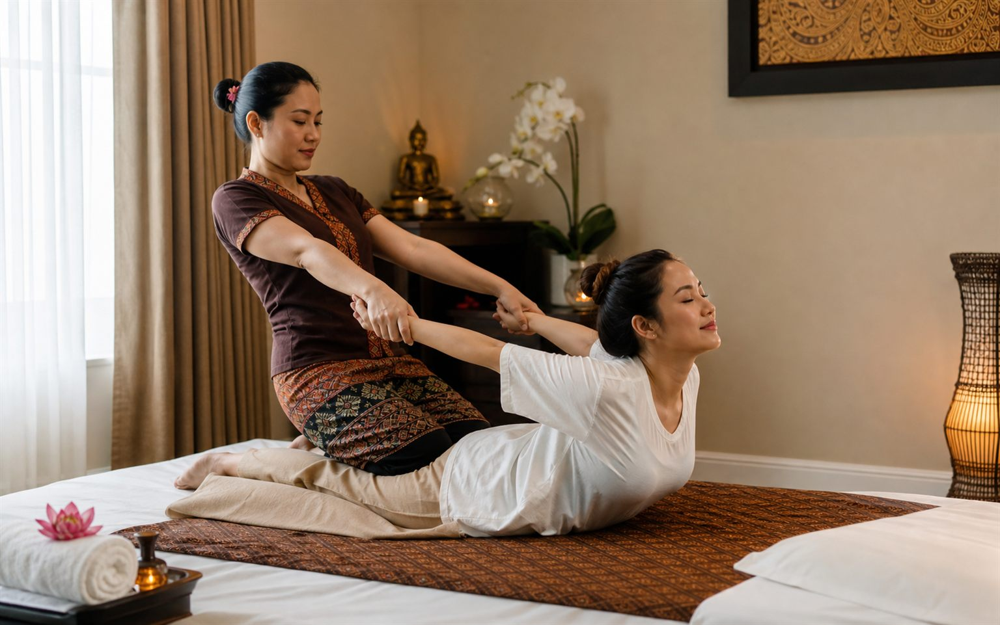

30 min
- Sportmassage
- 450 kr
Massage i Handen
Sportmassage i Handen
Sportmassage är en djupare massageform där tryck, stretch och rytmiska rörelser används för att hjälpa kroppen att släppa spänningar. Hos Lucky Spa Massage i Handen anpassas sportmassage efter din kropp, din dagsform och hur djup behandling du önskar.

Vad är sportmassage?
Sportmassage kombinerar press, sträckningar och arbete längs kroppens muskulatur. Många väljer sportmassage i Handen när de känner sig stela i rygg, nacke, axlar, höfter eller ben. Behandlingen kan upplevas mer aktiv än en klassisk avslappningsmassage, men hos Lucky Spa Massage anpassar vi alltid intensiteten.
För dig som söker massage i Handen, sportmassage nära Handen centrum eller en massagesalong i Handen med lugn miljö är Lucky Spa Massage ett lokalt alternativ. Vårt mål är att du ska känna dig trygg, lyssnad på och mer avslappnad efter besöket.
Så går behandlingen till
Behandlingen börjar med att du berättar var kroppen känns spänd och om du önskar en mjukare eller djupare massage. Därefter arbetar terapeuten metodiskt med tryck, stretch och lugna rörelser för att hjälpa musklerna att slappna av.
Hos Lucky Spa Massage i Handen kan sportmassage bokas i 30, 45, 60 eller 90 minuter. En kortare tid passar när du vill fokusera på ett område, medan en längre behandling ger mer tid för hela kroppen.
Gör sportmassage ont? Behandlingen kan kännas djup, men trycket anpassas efter dig. Säg alltid till om du vill ha mjukare eller fastare massage.
Behöver jag förbereda mig? Kom gärna några minuter innan din bokade tid och berätta om eventuella områden där du är extra stel.
Priser